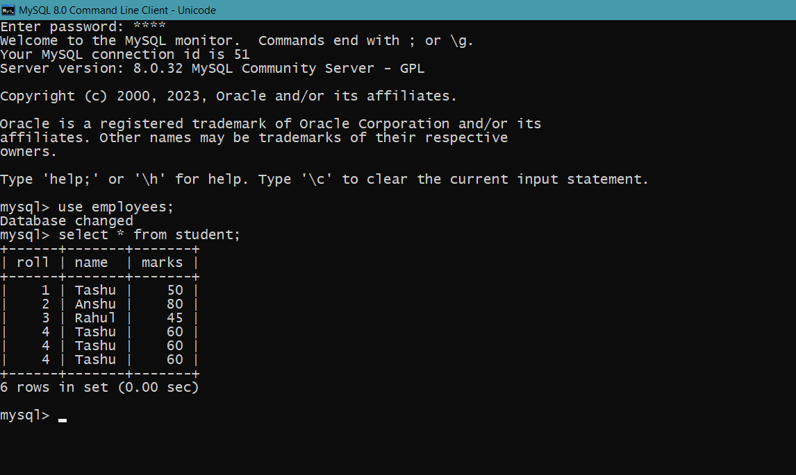
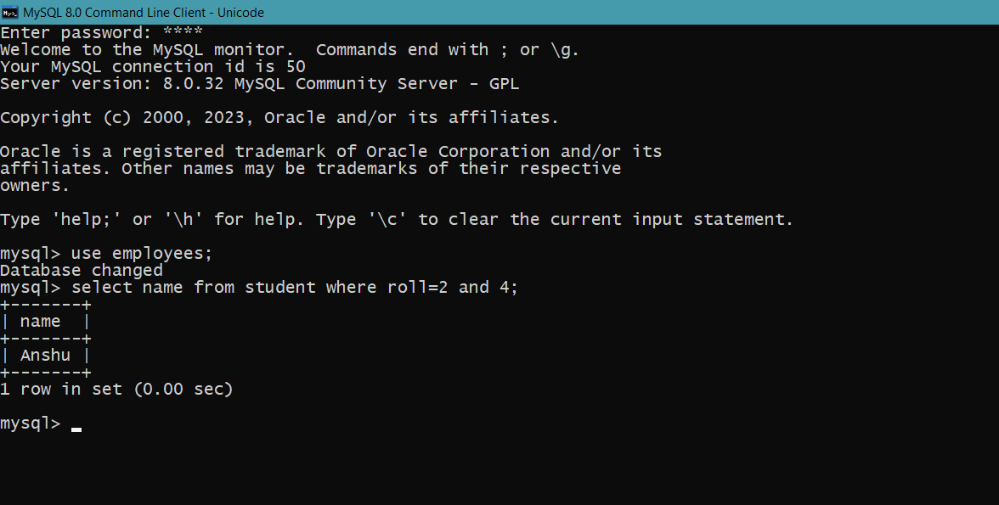

MySQL AND Condition
The MySQL AND condition is used with SELECT, INSERT, UPDATE or DELETE statements to test two or more conditions in an individual query.
Syntax
SELECT column1, column2, ...
FROM table_name
WHERE condition1 AND condition2 AND condition3 ...;

Example
SELECT * FROM student
WHERE roll = 2 AND roll = 4;
